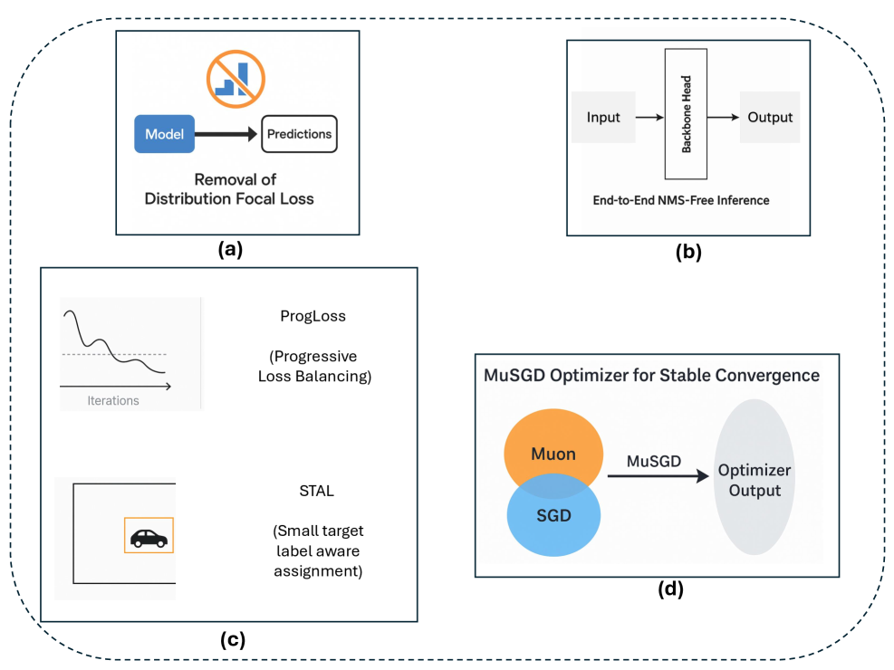

Executive Summary
지구 궤도에는 현재 1,000기 이상의 지구관측 위성이 돌고 있다. 이들이 하루에 촬영하는 영상은 페타바이트 단위다. 그러나 실제로 분석되는 영상은 전체의 5% 미만이다. 병목은 촬영이 아니라 해석에 있다. 전문 분석관이 위성영상 한 장을 판독하는 데 수 시간이 걸리고, 숙련된 인력은 전 세계적으로 부족하다. "위성은 이미 모든 것을 보고 있지만, 그것을 읽을 수 있는 사람은 충분하지 않다"는 것이 이 분야의 구조적 딜레마다.
GeoVision 프로젝트는 이 병목을 정면으로 돌파하는 기술 아키텍처를 제시한다. Ultralytics의 YOLO26이 위성영상에서 객체를 실시간으로 검출하고, LangGraph가 네 가지 도구(검출, 분할, 분류, 시각화)를 에이전트로 오케스트레이션하며, 사용자는 자연어로 "이 지역의 건물을 찾아줘"라고 말하기만 하면 된다. Modal이 서버리스 GPU(A10G)에서 추론을 실행하고, CopilotKit이 스트리밍 채팅 인터페이스를 제공한다. 기존의 "모델 하나, 작업 하나" 패러다임이 "에이전트가 여러 모델을 조합해서 사용자의 의도를 실현하는" 패러다임으로 전환되는 것이다.
이 전환이 의미 있는 이유는 데이터 품질에 있다. 위성영상 분석의 정확도는 모델 아키텍처만으로 결정되지 않는다. 입력 영상의 해상도, 대기 보정 상태, 클라우드 커버리지, 라벨 정합성이 모델 성능을 좌우한다. 에이전틱 시스템은 이 품질 변수들을 자동으로 평가하고 보정하는 파이프라인을 구축할 수 있는 구조적 기반을 제공한다. 페블러스가 이 기술에 주목하는 이유는 DataClinic의 이미지 품질 진단과 PebbloSim의 합성 위성영상 생성이 바로 이 파이프라인의 핵심 구성요소가 될 수 있기 때문이다.
하늘에서 쏟아지는 데이터, 분석은 왜 멈춰 있는가
지구관측(Earth Observation, EO)은 인류가 가진 가장 강력한 모니터링 도구다. 기후변화 추적, 산림 벌채 감시, 도시 확장 분석, 재난 대응, 농작물 수확량 예측 — 위성영상이 없으면 불가능하거나 비현실적으로 비용이 높은 작업들이다. 그리고 이 도구의 데이터 공급량은 폭발적으로 증가하고 있다.
1.1 위성영상 데이터의 폭발
지구관측 위성의 수는 지난 10년간 급격히 증가했다. Copernicus Sentinel 시리즈, Planet Labs의 초소형 위성 군집(200기 이상), Maxar의 고해상도 상업 위성, 그리고 중국의 가오펀(高分) 시리즈가 매일 수십 테라바이트의 영상을 지상으로 전송한다.
- • Sentinel-2: ESA가 운영하는 다중분광 위성으로, 전 지구를 5일 주기로 촬영한다. 10m 해상도의 13개 밴드 영상을 무료로 공개하며, 누적 다운로드 데이터는 100PB를 넘었다.
- • Planet Labs: 200기 이상의 Dove 위성으로 전 지구를 매일 촬영하는 상업 플랫폼이다. 3~5m 해상도의 일일 영상을 제공하며, 하루 생성 데이터량은 약 30TB에 달한다.
- • Maxar WorldView: 30cm급 초고해상도 상업 위성으로, 건물 개별 식별이 가능하다. 국방, 보험, 도시계획 분야의 핵심 데이터 소스다.
문제는 이 데이터의 대부분이 분석되지 않은 채 아카이브에 쌓인다는 것이다. 유럽우주국(ESA)은 Copernicus 데이터의 분석 활용률이 전체의 5% 미만이라고 보고했다. NASA의 EOSDIS(Earth Observing System Data and Information System)에는 60PB 이상의 데이터가 저장되어 있지만, 대부분은 다운로드되지도 않는다.
1.2 병목은 촬영이 아니라 해석이다
위성영상 분석의 전통적 워크플로는 노동집약적이다. 전문 분석관이 영상을 다운로드하고, 대기 보정과 기하 보정을 수행하고, 관심 영역(ROI)을 설정하고, 수작업으로 객체를 식별하거나 지도를 제작한다. 한 장의 고해상도 위성영상을 완전히 분석하는 데 수 시간에서 수일이 걸린다.
딥러닝이 이 과정의 일부를 자동화했지만, 근본적인 구조는 바뀌지 않았다. 기존의 딥러닝 기반 위성영상 분석은 "하나의 모델이 하나의 작업을 수행하는" 파이프라인이다. 건물을 검출하려면 건물 검출 모델을, 도로를 분할하려면 도로 분할 모델을, 토지 이용을 분류하려면 토지 분류 모델을 각각 학습시키고 배포해야 한다. 모델마다 별도의 학습 데이터, 하이퍼파라미터 튜닝, GPU 인프라가 필요하다.
지구관측의 진짜 병목은 데이터 부족이 아니라 분석 역량의 부족이다. 위성은 이미 충분히 보고 있다. 문제는 그것을 읽을 수 있는 시스템이 충분하지 않다는 것이다. 에이전틱 AI가 이 구조적 격차를 메울 수 있는 이유는, 단일 모델의 한계를 넘어 여러 모델을 조합하고, 사용자의 자연어 의도를 실행 가능한 분석 파이프라인으로 변환할 수 있기 때문이다.

1.3 전통적 접근의 한계
기존의 위성영상 분석 파이프라인이 가진 구조적 한계를 정리하면 다음과 같다.
- • 단일 작업 모델: 검출, 분할, 분류가 각각 독립된 모델로 운영된다. 복합 질문("이 지역에서 건물 밀도가 높은 곳의 녹지 비율은?")에 대답하려면 여러 모델의 결과를 수작업으로 조합해야 한다.
- • 전문가 의존: GIS 소프트웨어(ArcGIS, QGIS)를 다루려면 최소 수개월의 교육이 필요하다. 정책 담당자나 재난 대응 현장 인력이 직접 위성영상을 분석하기 어렵다.
- • 인프라 비용: 고해상도 위성영상의 추론에는 GPU가 필수이며, 상시 운영 시 비용이 급증한다. 간헐적 분석 수요에 상시 GPU 클러스터를 유지하는 것은 비효율적이다.
- • 데이터 품질 블라인드 스팟: 입력 영상의 품질(구름 피복, 대기 상태, 센서 노이즈)이 결과에 미치는 영향을 사전에 평가하는 자동화된 메커니즘이 없다. 분석관의 경험에 의존한다.
GeoVision이 제안하는 에이전틱 아키텍처는 이 네 가지 한계를 동시에 해결하려는 시도다. YOLO26이 실시간 객체검출을 담당하고, LangGraph가 여러 도구를 조합하며, Modal이 서버리스 GPU를 제공하고, CopilotKit이 자연어 인터페이스를 열어준다.
YOLO의 진화 — v8에서 YOLO26까지
YOLO(You Only Look Once)는 2015년 Joseph Redmon이 발표한 이래 실시간 객체검출의 대명사가 되었다. "한 번만 보면 된다"는 이름 그대로, 이미지를 한 번의 순전파(forward pass)로 처리하여 객체의 위치와 클래스를 동시에 예측한다. 10년간의 진화를 거쳐 YOLO26에 이르렀고, 위성영상 분석의 핵심 추론 엔진으로 자리잡고 있다.
2.1 YOLO 계보: 속도와 정확도의 줄다리기
YOLO의 역사는 속도와 정확도 사이의 트레이드오프를 줄여온 과정이다. 각 버전이 해결한 핵심 문제를 살펴보면 기술 진화의 방향이 보인다.
YOLOv1(2015)은 실시간 객체검출이라는 개념 자체를 증명했다. 당시 주류였던 R-CNN 계열이 이미지당 수 초가 걸린 반면, YOLO는 45fps로 처리했다. 그러나 작은 객체와 밀집 객체에서 정확도가 크게 떨어졌다. YOLOv2(2016)는 앵커 박스를 도입하여 다양한 크기의 객체를 더 정확하게 잡았고, YOLOv3(2018)는 다중 스케일 예측으로 작은 객체 검출을 개선했다. YOLOv4(2020)와 YOLOv5(2020)는 학습 기법(Mosaic augmentation, CIoU loss)과 배포 편의성에서 큰 진전을 이루었다.
YOLOv8(2023, Ultralytics)은 앵커-프리(Anchor-Free) 설계를 채택하여 앵커 박스 설정이라는 수작업을 제거했다. 동시에 분류 헤드와 회귀 헤드를 분리(Decoupled Head)하여 검출 정확도를 높였다. YOLOv8은 검출뿐 아니라 세그멘테이션, 포즈 추정, 분류를 하나의 프레임워크에서 제공하면서 "범용 비전 엔진"으로 포지셔닝했다.

2.2 YOLO11과 YOLO26: NMS-Free의 시대
YOLO11(2024)은 C3K2 블록과 경량 어텐션 메커니즘(C2PSA)을 도입하여 파라미터 효율성을 높였다. 그러나 진정한 패러다임 전환은 YOLO26(2025)에서 일어났다.
YOLO26의 핵심 혁신은 세 가지다.
- • NMS-Free 추론: 비최대 억제(Non-Maximum Suppression, NMS)는 YOLO 계열이 10년간 사용해온 후처리 단계다. 중복된 검출 박스를 제거하는 역할이지만, 밀집 객체에서 정확한 박스를 잘못 제거하는 문제가 있었고, 추론 시간의 상당 부분을 차지했다. YOLO26은 학습 단계에서 일대일 매칭(one-to-one matching)을 수행하여 NMS 없이도 깔끔한 검출 결과를 출력한다. 이것은 엣지 디바이스 배포에서 특히 중요하다 — NMS의 가변 실행시간이 제거되면서 추론 지연시간이 예측 가능해진다.
- • Area Attention: 전체 이미지에 어텐션을 적용하면 계산량이 픽셀 수의 제곱에 비례하여 증가한다. YOLO26은 이미지를 영역으로 분할하여 각 영역 내에서만 어텐션을 계산한다. 이를 통해 Transformer의 표현력을 유지하면서 계산량을 관리 가능한 수준으로 억제한다. 고해상도 위성영상 처리에서 이 구조는 실질적인 차이를 만든다.
- • 엣지 최적화: YOLO26n(나노) 모델은 2.4M 파라미터로 COCO에서 40.6 mAP를 달성한다. YOLO11n(2.6M 파라미터, 39.5 mAP)보다 적은 파라미터로 더 높은 정확도를 기록한 것이다. 이는 위성 탑재 컴퓨팅이나 드론 온보드 처리에 직접 적용할 수 있는 수준이다.

2.3 위성영상에서의 YOLO: 성과와 도전
YOLO 계열은 위성영상 객체검출에서 이미 광범위하게 활용되고 있다. xView(미국 국방부 후원, 60개 클래스, 100만 객체) 데이터셋에서 YOLOv8 기반 모델이 상위권에 위치하고, DOTA(항공영상 객체검출) 벤치마크에서도 경쟁력 있는 성능을 보인다.
그러나 위성영상은 자연영상과 근본적으로 다른 특성을 가진다. 객체가 극도로 작고(건물이 10x10 픽셀에 불과할 수 있다), 회전된 바운딩 박스(Oriented Bounding Box, OBB)가 필요하며, 동일 영상에서 객체 밀도가 수백에서 수만까지 변한다. 또한 다중분광(Multispectral) 밴드의 활용, 시계열 변화 탐지 등 자연영상 객체검출에는 없는 고유한 요구사항이 존재한다.

YOLO26은 "범용 실시간 검출기"로서 위성영상에 적용할 수 있는 기술적 기반을 제공하지만, 위성영상의 고유한 특성(극소 객체, OBB, 다중분광)에 대한 도메인 적응이 여전히 필요하다. 중요한 것은 YOLO26 자체가 아니라, YOLO26을 "도구 중 하나"로 활용하면서 도메인 특화 모듈과 조합하는 시스템 아키텍처다. 이것이 바로 에이전틱 오케스트레이션의 역할이다.
2.4 벤치마크 성능 비교
COCO val2017에서의 YOLO 계열 모델 성능을 비교하면, YOLO26의 파라미터 효율성이 명확히 드러난다. 다음 표는 각 모델의 나노(n) 변종 기준 수치다.
| 모델 | 파라미터 | mAP50-95 | 지연시간 (ms) |
|---|---|---|---|
| YOLOv8n | 3.2M | 37.3 | 1.47 |
| YOLO11n | 2.6M | 39.5 | 1.55 |
| YOLO26n | 2.4M | 40.6 | 1.30 |
YOLO26n은 가장 적은 파라미터(2.4M)로 가장 높은 정확도(40.6 mAP)와 가장 빠른 속도(1.30ms)를 동시에 달성했다. 이 "파레토 최적"은 엣지 배포와 서버리스 추론 모두에서 실질적인 이점으로 이어진다.

LangGraph가 YOLO를 오케스트레이션한다
GeoVision의 아키텍처를 관통하는 핵심 통찰은 단순하다. "모델 하나를 더 좋게 만드는 것"보다 "여러 모델을 잘 조합하는 것"이 더 큰 가치를 만든다. LangGraph는 이 조합의 방법론을 제공한다.
3.1 LangGraph란 무엇인가
LangGraph는 LangChain 팀이 개발한 에이전트 오케스트레이션 프레임워크다. LLM 기반 에이전트가 도구(tool)를 호출하고, 결과를 관찰하고, 다음 행동을 결정하는 순환적 워크플로를 방향 그래프(Directed Graph)로 정의한다. 기존의 LangChain이 선형적 체인(chain) 구조에 초점을 맞추었다면, LangGraph는 조건부 분기, 반복, 병렬 실행을 지원하는 상태 기반 그래프(Stateful Graph)를 제공한다.
핵심 개념은 세 가지다. 노드(Node)는 실행 단위이며, 엣지(Edge)는 노드 간의 전이를 정의하고, 상태(State)는 그래프 전체에서 공유되는 컨텍스트다. 에이전트가 도구를 호출할 때마다 상태가 업데이트되고, 다음 노드로의 전이 조건이 평가된다. 이 구조 덕분에 "검출 결과가 0개이면 영상 품질을 먼저 확인하고, 10개 이상이면 분할로 넘어간다"는 조건부 로직을 자연스럽게 표현할 수 있다.
3.2 GeoVision의 4-Tool 아키텍처
GeoVision은 LangGraph 에이전트에 네 가지 도구를 등록한다. 각 도구는 독립적으로 호출 가능하며, 에이전트가 사용자의 자연어 질문을 분석하여 적절한 도구 조합을 결정한다.
- • detect_objects: YOLO26 모델을 호출하여 위성영상에서 객체를 검출한다. 바운딩 박스 좌표, 클래스 레이블, 신뢰도 점수를 반환한다. 사용자가 "건물을 찾아줘"라고 하면 이 도구가 호출된다.
- • segment_regions: 의미론적 분할(Semantic Segmentation)을 수행하여 영상의 각 픽셀을 클래스(건물, 도로, 녹지, 수체 등)로 분류한다. "이 지역의 토지 이용 현황을 분석해줘"라는 요청에 대응한다.
- • classify_scene: 영상 전체의 장면(scene)을 분류한다. 도시, 농촌, 산림, 해안, 산업 지역 등의 카테고리를 반환한다. 대규모 영상 아카이브에서 특정 유형의 장면을 필터링할 때 유용하다.
- • visualize_results: 검출, 분할, 분류 결과를 시각적으로 렌더링하여 사용자에게 보여준다. 바운딩 박스 오버레이, 분할 마스크 컬러맵, 통계 요약 차트 등을 생성한다.
3.3 에이전틱 워크플로의 실제
사용자가 "이 위성 영상에서 건물을 찾고, 건물 밀집 지역의 녹지 비율을 계산해줘"라고 요청한다고 가정하자. 기존의 단일 모델 파이프라인에서는 이 요청을 처리하기 위해 분석관이 (1) 건물 검출 모델 실행, (2) 결과에서 밀집 지역 수작업 선별, (3) 해당 영역에 토지 분류 모델 적용, (4) 녹지 클래스 비율 수동 계산이라는 네 단계를 순차적으로 수행해야 한다.
GeoVision의 LangGraph 에이전트는 이 과정을 자동으로 분해하고 실행한다. LLM이 사용자의 의도를 파싱하여 실행 계획을 수립하고, detect_objects로 건물을 검출한 뒤, 결과의 공간적 밀도를 분석하여 밀집 영역을 식별하고, 해당 영역에 segment_regions를 적용하여 녹지 비율을 산출하며, visualize_results로 최종 결과를 시각화한다. 각 단계의 결과는 LangGraph의 상태(State)에 누적되어 다음 단계의 입력으로 활용된다.
에이전틱 오케스트레이션의 진가는 "도구의 성능"이 아니라 "도구의 조합"에 있다. 개별 도구(YOLO26 검출, 세그멘테이션 등)의 성능이 동일하더라도, 에이전트가 사용자의 의도에 맞게 도구를 선택하고 순서를 결정하고 결과를 연결하는 능력이 시스템 전체의 가치를 결정한다. LangGraph는 이 "조합의 인텔리전스"를 구현하는 프레임워크다.
3.4 인프라: Modal + CopilotKit
GeoVision의 인프라 스택은 두 가지 핵심 구성요소로 이루어진다. 추론 계산을 담당하는 Modal과 사용자 인터페이스를 담당하는 CopilotKit이다.
Modal은 서버리스 GPU 플랫폼이다. 컨테이너 이미지에 YOLO26 모델을 패키징하면, 요청이 들어올 때만 A10G GPU를 할당받아 추론을 실행하고, 유휴 시에는 비용이 발생하지 않는다. 위성영상 분석은 "가끔 대량으로" 수행되는 특성이 있어 서버리스 모델과 궁합이 좋다. 콜드 스타트 지연을 최소화하기 위해 모델 가중치를 Modal의 Volume에 사전 캐싱하는 전략을 사용한다.
CopilotKit은 LLM 기반 AI 코파일럿을 웹 애플리케이션에 통합하기 위한 오픈소스 프레임워크다. GeoVision에서는 사용자가 자연어로 분석 요청을 입력하고, 에이전트의 실행 과정(어떤 도구를 호출하고 있는지, 현재 진행 상황은 어떤지)을 실시간 스트리밍으로 확인할 수 있는 채팅 인터페이스를 제공한다. 추론 시간이 수 초에서 수십 초가 걸릴 수 있는 위성영상 분석에서, 진행 상황의 실시간 피드백은 사용자 경험에 결정적이다.
3.5 Nebius Token Factory: LLM 서빙
GeoVision은 에이전트의 "두뇌" 역할을 하는 LLM으로 Nebius의 Token Factory에서 서빙되는 gpt-oss-20b 모델을 사용한다. Nebius(구 Yandex Cloud)는 GPU 클라우드 인프라에 특화된 플랫폼으로, Token Factory는 오픈소스 LLM을 API 형태로 제공하는 서비스다. 독점 모델(GPT-4, Claude)에 비해 비용이 낮고, 위성영상 분석처럼 도메인 특화된 프롬프트 튜닝이 필요한 경우 오픈소스 모델의 유연성이 유리하다.
이 아키텍처에서 LLM의 역할은 도구 선택과 실행 계획 수립에 한정된다. 실제 비전 추론(객체검출, 분할)은 YOLO26이 수행하고, LLM은 사용자의 자연어 요청을 파싱하고, 적절한 도구를 선택하고, 도구의 실행 결과를 해석하여 사용자에게 자연어로 보고하는 "오케스트레이터" 역할만 한다. 이 역할 분리가 시스템의 비용 효율성과 추론 정확도를 동시에 달성하는 핵심이다.
경쟁 지형과 시장
지구관측 AI 시장은 성장 궤도에 있지만, 참여자들의 접근 방식은 크게 세 갈래로 나뉜다. 전통적 GIS 기업의 AI 통합, 위성 운영사의 분석 플랫폼 확장, 그리고 GeoVision 같은 에이전틱 AI 스타트업의 신규 진입이다. 각 접근의 강점과 한계를 살펴본다.
4.1 전통 GIS 기업의 AI 통합
Esri(ArcGIS)는 GIS 시장의 압도적 1위 사업자다. ArcGIS Pro에 딥러닝 기반 객체검출과 토지 분류 기능을 통합하고, ArcGIS Living Atlas를 통해 글로벌 위성영상 레이어를 제공한다. 2024년에는 ArcGIS GeoPilot이라는 자연어 기반 공간 분석 도구를 발표하며 에이전틱 접근에 한 발을 내딛었다.
그러나 Esri의 접근은 기존 GIS 생태계에 AI를 "추가"하는 방식이다. 분석 워크플로는 여전히 ArcGIS 데스크톱 클라이언트 중심이며, 클라우드 네이티브 아키텍처로의 전환은 점진적이다. 에이전틱 오케스트레이션이 Esri의 모놀리식 아키텍처와 어떻게 통합될 수 있을지는 아직 불분명하다.
4.2 위성 운영사의 분석 플랫폼
Planet Labs는 자체 위성 군집에서 촬영한 영상을 API로 제공하는 것을 넘어, Planet Insights Platform을 통해 변화 탐지, 자산 모니터링, 공급망 분석 등 분석 서비스를 직접 제공하기 시작했다. Maxar도 유사하게 Maxar Intelligence Platform으로 분석 레이어를 확장하고 있다.
이들의 강점은 데이터 소스에 대한 직접적 접근이다. 자체 위성에서 촬영한 최신 고해상도 영상을 즉시 분석에 투입할 수 있다. 약점은 자사 위성 데이터에 최적화된 폐쇄적 생태계라는 점이다. Sentinel-2나 Landsat 같은 공개 데이터와의 통합은 제한적이며, 다른 센서의 데이터를 결합하는 유연성이 부족하다.
4.3 기초 모델(Foundation Model) 접근
2023~2025년 사이에 지구관측 전용 기초 모델(Foundation Model)이 대거 등장했다. IBM/NASA의 Prithvi는 HLS(Harmonized Landsat Sentinel-2) 데이터로 사전학습된 지리공간 기초 모델이고, Microsoft의 Satlas는 Sentinel-2 영상으로 학습한 대규모 비전 모델이다. Clay Foundation Model은 다중 센서(SAR, 광학, 열적외선) 데이터를 통합하는 지구관측 기초 모델을 오픈소스로 공개했다.
기초 모델 접근은 도메인 특화 사전학습을 통해 적은 라벨 데이터로도 다양한 다운스트림 작업을 수행할 수 있다는 장점이 있다. 그러나 대부분의 기초 모델이 아직 연구 단계에 있으며, 프로덕션 배포에 필요한 추론 속도, 비용 효율성, 실시간 처리 능력에서 YOLO 계열에 미치지 못한다.

4.4 시장 규모와 전망
지구관측 분석 시장은 다층적 구조를 가진다. 전체 지구관측 시장은 2025년 기준 약 $8.5B 규모이며, 2030년까지 연평균 성장률(CAGR) 12~15%로 성장할 것으로 전망된다(Euroconsult, 2025). 이 중 데이터 분석 소프트웨어 시장은 약 $2.8B 규모다.
흥미로운 것은 AI 기반 분석이 시장 성장의 가속 요인이 되고 있다는 점이다. McKinsey(2024)는 AI가 지구관측 데이터의 접근성과 활용도를 높여 시장 규모를 2030년까지 $16B 이상으로 확대할 수 있다고 전망했다. 특히 비전문가도 자연어로 위성영상을 분석할 수 있게 되면, 기존에 위성영상을 활용하지 않던 산업(보험, 금융, 부동산, 소매)으로 시장이 확장된다.
GeoVision의 에이전틱 접근이 경쟁에서 차별화되는 지점은 "누가 더 좋은 모델을 가지고 있는가"가 아니라 "누가 비전문가도 사용할 수 있는 인터페이스를 제공하는가"다. Esri, Planet, Microsoft 모두 강력한 모델과 데이터를 가지고 있지만, 자연어로 복합적 분석 요청을 처리하고 실시간으로 결과를 스트리밍하는 사용자 경험은 아직 초기 단계다. 이 접점에서의 혁신이 시장 확대의 열쇠가 될 것이다.
4.5 주요 분야별 활용 사례
에이전틱 지구관측 기술이 가장 즉각적인 가치를 창출할 수 있는 분야를 살펴보면 시장의 잠재력이 구체적으로 드러난다.
- • 재난 대응: 홍수, 산불, 지진 후 피해 지역을 신속히 파악하는 것은 시간이 생명인 작업이다. "지진 전후 위성영상을 비교해서 건물 붕괴 지역을 표시해줘"라는 자연어 요청만으로 피해 평가가 가능해진다.
- • 정밀 농업: 작물 건강 상태, 관개 효율, 수확 시기 예측에 다중분광 위성영상이 활용된다. 에이전트가 NDVI(식생지수) 분석과 변화 탐지를 조합하여 "이 농장에서 스트레스를 받는 구역은 어디인가"에 대답할 수 있다.
- • 도시 계획: 도시 확장 패턴, 녹지 비율 변화, 인프라 노후화 모니터링에 시계열 위성영상이 핵심이다. 비전문 도시 계획 담당자도 자연어로 분석을 요청할 수 있다면 데이터 기반 의사결정의 문턱이 크게 낮아진다.
- • ESG 모니터링: 탄소 배출원 추적, 산림 파괴 감시, 수질 변화 모니터링 등 환경 지표를 위성영상으로 객관적으로 측정하는 수요가 증가하고 있다. EU의 CSRD(기업 지속가능성 보고 지침)가 2025년부터 적용되면서, 기업이 직접 위성영상 기반 ESG 데이터를 검증해야 하는 상황이 현실화되고 있다.
Pebblous 관점 — 이중 방어선의 위성 이미지 확장
페블러스가 GeoVision 아키텍처에 주목하는 이유는 기술적 호기심이 아니다. DataClinic과 PebbloSim이라는 두 핵심 제품이 위성영상 분석 파이프라인에서 정확히 필요한 위치에 놓일 수 있기 때문이다.
5.1 DataClinic: 위성영상 품질 진단
위성영상 분석에서 "쓰레기를 넣으면 쓰레기가 나온다(GIGO)"는 원칙은 특히 치명적이다. 구름이 50% 이상 덮인 영상을 건물 검출 모델에 넣으면 당연히 검출률이 급락하지만, 자동화된 파이프라인에서는 이 입력 영상의 품질을 사전에 확인하지 않고 추론을 실행하는 경우가 빈번하다. 그 결과 분석관은 "이 결과가 맞는 건가, 아니면 입력 데이터가 나빴던 건가"를 사후에 추적해야 한다.
DataClinic의 이미지 품질 진단 모듈은 이 사전 필터링 역할을 수행한다. 구름 피복 비율, 대기 상태 지표, 센서 노이즈 수준, 해상도 일관성, 지리참조(Georeferencing) 정합도를 자동으로 평가하고, 품질 점수가 임계값 이하인 영상은 파이프라인에서 자동으로 배제하거나 경고를 발생시킨다. GeoVision의 에이전틱 아키텍처에 DataClinic을 통합하면, LangGraph 에이전트가 detect_objects를 호출하기 전에 먼저 DataClinic의 품질 진단 도구를 호출하는 프리플라이트 체크(preflight check) 단계를 추가할 수 있다.
5.2 PebbloSim: 합성 위성영상 생성
위성영상 객체검출 모델의 학습에서 가장 큰 병목은 라벨링된 데이터의 부족이다. 건물 검출을 예로 들면, 전 세계의 건물 유형(고층 빌딩, 저층 주택, 공장, 임시 구조물)과 촬영 조건(태양 고도각, 계절, 센서 유형)의 조합은 사실상 무한하다. 실제 위성영상만으로는 이 모든 조합을 커버할 수 없다.
PebbloSim은 이 데이터 부족 문제를 합성 위성영상 생성으로 해결한다. 물리 기반 시뮬레이션 엔진이 태양 위치, 대기 산란, 센서 특성을 재현하여 실제와 구분하기 어려운 합성 영상을 생성한다. 중요한 것은 합성 영상에는 완벽한 라벨(ground truth)이 자동으로 부여된다는 점이다. 건물의 정확한 윤곽, 픽셀 단위의 분할 마스크, 객체별 속성 정보가 시뮬레이션 과정에서 자연스럽게 생성된다.
그러나 합성 데이터만으로는 충분하지 않다. 합성 영상과 실제 영상 사이의 도메인 갭(Domain Gap)이 존재하며, 이 갭을 줄이지 않으면 합성 데이터로 학습한 모델이 실제 영상에서 성능이 하락하는 현상이 발생한다. 페블러스의 접근은 DataClinic의 품질 진단으로 도메인 갭을 측정하고, PebbloSim의 생성 파라미터를 조정하여 갭을 최소화하는 피드백 루프를 구축하는 것이다.
5.3 이중 방어선: 진단 + 보완
페블러스의 "이중 방어선" 아키텍처는 GeoVision 같은 에이전틱 위성영상 분석 시스템에 두 겹의 데이터 품질 보장을 제공한다.
- • 1차 방어선 — DataClinic (입력 품질 검증): 추론 전에 입력 영상의 품질을 진단하고, 기준 미달 영상을 필터링한다. "이 영상은 구름 피복 62%로 건물 검출에 부적합합니다. 2일 전 영상으로 대체할까요?"와 같은 자동 의사결정이 가능해진다.
- • 2차 방어선 — PebbloSim (학습 데이터 보완): 모델의 약점이 드러나는 영역(특정 건물 유형의 미검출, 특정 촬영 조건에서의 성능 저하)에 맞춤형 합성 데이터를 생성하여 모델을 보강한다. DataClinic이 약점을 진단하면 PebbloSim이 그 약점을 보완하는 데이터를 만드는 피드백 루프다.
5.4 에이전틱 아키텍처와의 통합 시나리오
GeoVision의 LangGraph 에이전트에 DataClinic과 PebbloSim을 도구(tool)로 등록하면, 에이전트의 분석 능력이 구조적으로 확장된다. 기존의 4개 도구(검출, 분할, 분류, 시각화)에 2개의 품질 관련 도구가 추가되는 것이다.
- • diagnose_quality: DataClinic이 입력 영상의 품질을 진단하고, 분석 적합성 점수를 반환한다.
- • generate_synthetic: PebbloSim이 특정 조건의 합성 위성영상을 생성하여 모델 재학습 데이터로 제공한다.
이 6-Tool 아키텍처에서 에이전트는 "이 영상을 분석해줘"라는 요청을 받았을 때, 먼저 영상 품질을 진단하고, 품질이 충분하면 검출/분할을 수행하며, 검출 결과의 신뢰도가 낮은 영역에 대해서는 합성 데이터로 모델을 보강하는 전체 루프를 자율적으로 관리할 수 있다.
YOLO26의 실시간 검출 성능과 LangGraph의 에이전틱 오케스트레이션은 위성영상 분석의 "실행"을 혁신한다. 그러나 실행의 정확도는 궁극적으로 입력 데이터의 품질에 의존한다. DataClinic(진단)과 PebbloSim(보완)이 제공하는 이중 방어선은 이 "실행 정확도의 기반"을 구축한다. 모델이 아무리 뛰어나도, 데이터가 준비되지 않으면 쓸모없다. 이것이 페블러스가 모델 개발이 아닌 데이터 품질 인프라에 집중하는 이유다.
자주 묻는 질문
위성영상 AI 분석, YOLO26, LangGraph 에이전틱 시스템에 관한 핵심 질문과 답변을 정리했다.
참고문헌
논문 및 학술 자료
- Redmon et al., "You Only Look Once: Unified, Real-Time Object Detection," CVPR 2016. arXiv:1506.02640
- Jocher et al., "Ultralytics YOLO," GitHub, 2023-2025. https://github.com/ultralytics/ultralytics
- Ultralytics Team, "YOLO26: State-of-the-Art Real-Time Object Detection," 2025. https://docs.ultralytics.com/models/yolo26/
- LangChain Team, "LangGraph: Build Resilient Language Agents as Graphs," 2024. https://github.com/langchain-ai/langgraph
- Schelter et al., "On Challenges in Machine Learning Model Management," IEEE Data Eng. Bull., 2018.
- Sculley et al., "Hidden Technical Debt in Machine Learning Systems," NeurIPS 2015.
- Northcutt et al., "Pervasive Label Errors in Test Sets Destabilize Machine Learning Benchmarks," NeurIPS 2021. arXiv:2103.14749
- Lam et al., "xView: Objects in Context in Overhead Imagery," 2018. arXiv:1802.07856
- Ding et al., "Object Detection in Aerial Images: A Large-Scale Benchmark and Challenges (DOTA)," IEEE TPAMI, 2021.
- Jakubik et al., "Foundation Models for Generalist Geospatial Artificial Intelligence (Prithvi)," 2023. arXiv:2310.18660
- Bastani et al., "Satlas: A Large-Scale, Multi-Task Dataset for Remote Sensing," 2023. arXiv:2211.15660
기업 및 업계 자료
- Euroconsult, "Earth Observation Market Report," 2025.
- McKinsey Global Institute, "The Economic Potential of Generative AI and Earth Observation," 2024.
- ESA Copernicus Programme, "Sentinel-2 User Guide," 2024. https://sentinel.esa.int/web/sentinel/user-guides/sentinel-2-msi
- Planet Labs, "Planet Platform Overview," 2025. https://www.planet.com/products/platform/
- Modal Labs, "Serverless GPU Infrastructure for AI," 2025. https://modal.com
- CopilotKit, "Build AI Copilots for Any Application," 2025. https://www.copilotkit.ai
- Nebius AI, "Token Factory — Open LLM Serving," 2025. https://nebius.ai
- Clay Foundation, "Clay Foundation Model for Earth Observation," 2024. https://clay.earth
- Esri, "ArcGIS GeoPilot Preview," 2024. https://www.esri.com
데이터 출처
- COCO val2017 Benchmark Results — Ultralytics Documentation, 2025.
- NASA EOSDIS Data Volume — https://www.earthdata.nasa.gov, 2025.
- Kaggle State of Data Science Survey, 2024.
- xView Challenge Leaderboard — https://xviewdataset.org, 2024.